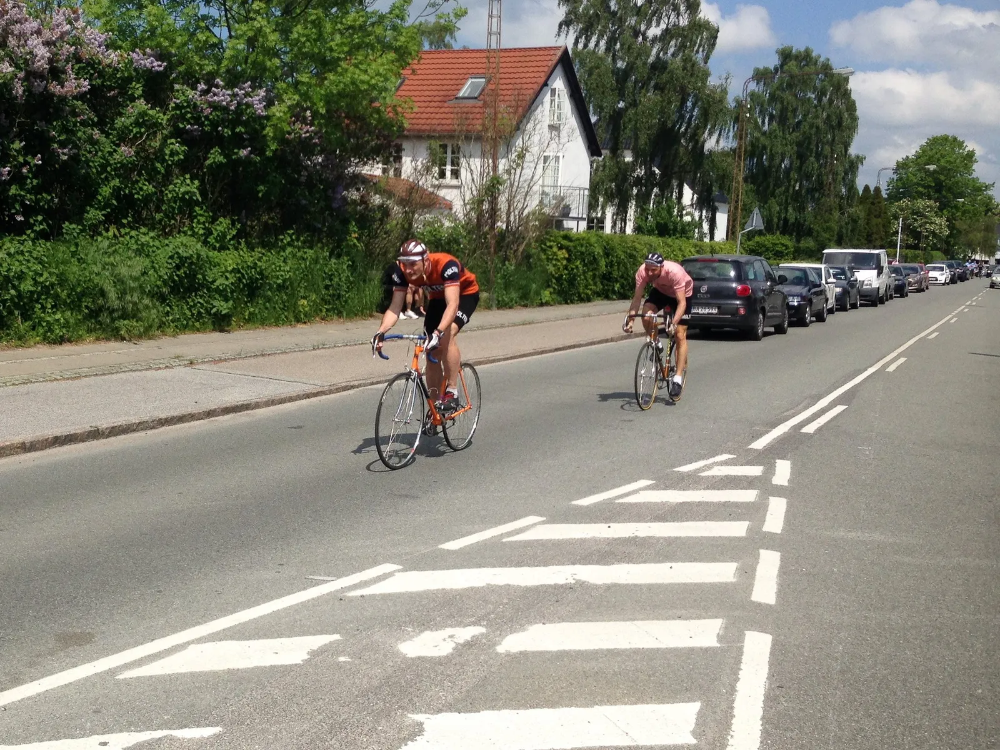
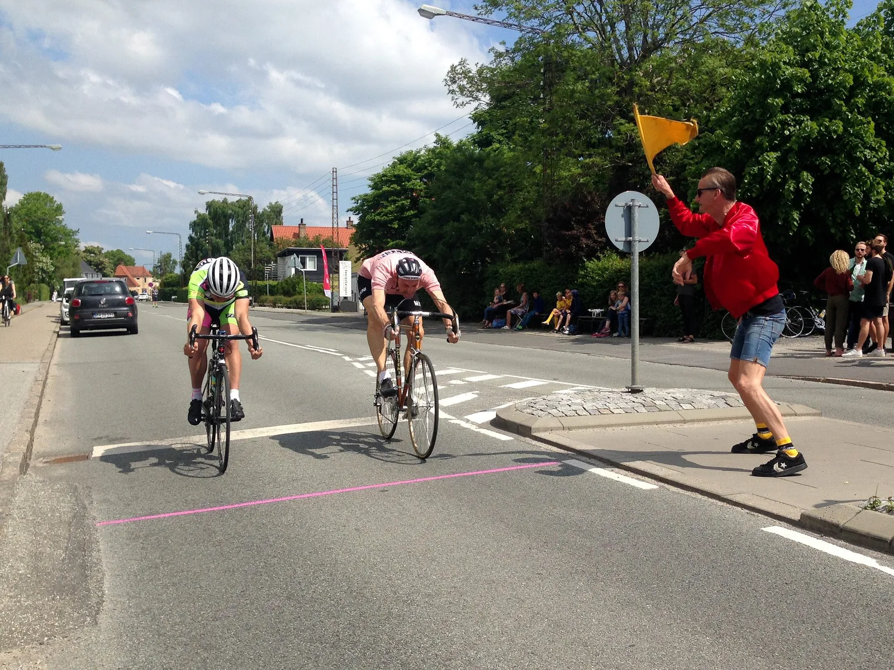
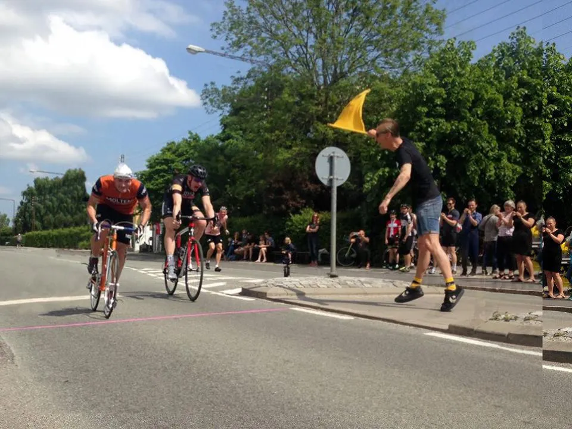
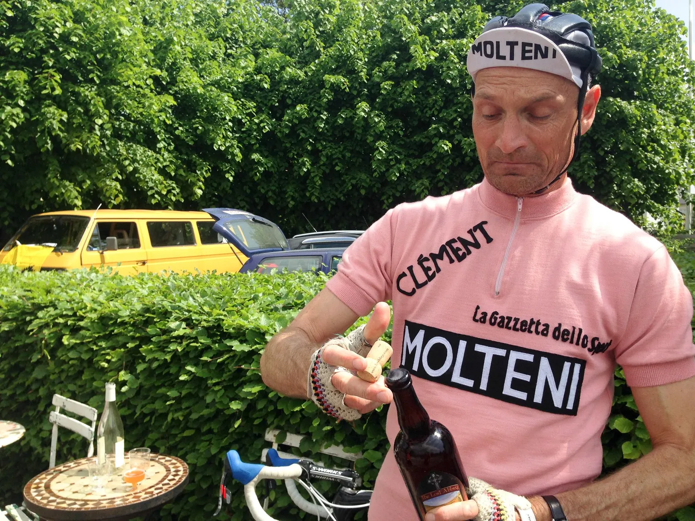

Løbsberetning: Et gennemkorrupt Sprint 69 ræs

Nordre Strandvej i Risskov ved Aarhus var søndag eftermiddag klædt på til ægte Italiensk væddeløb. 100 meter gedigen sprint. Mand mod mand. Det var Gruppo Sportivo Velopresse’s Sprint69!
Og Squadra Molteni havde lagt alt til rette for holdets supersprinter Grane Wünderbein, som havde en 2. plads fra sidste år at revanchere.
Holdkaptajn Niels Bjørnsteen, Grane Wünderbein og Kasper Sørensen meldte sig ved den obligatoriske indskrivning kl. 12:29. Præcis 1 minut før første start. Der er ingen grund til at komme før.
– Hele vinteren har vi været i laboratoriet for at optimere udstyr og finde watt. Vi ved, at vores konkurrenter har øjnene på stilke, for at aflure os. I dag havde de sågar en drone hængende over vores hoveder hele eftermiddagen, udtaler Niels Bjørnsteen.
Veltrimmede ryttere og korrupt løbsledelse
Stuvet sammen, i tre tykke rækker, stod tilskuerne stuvet sammen på fortovet, for at få et glimt at de veltrimmede ryttere, før de blæste forbi med 75 km. timen. Luften var tyk af spænding og duften af kamfer, frisk læder, italiensk hvidvin og hjemmelavede pøller på grillen.
Chefen, Il Dottore, og kaptajnen for G.S.V. stod for lodtrækning og flagføring. Det skulle vise sig, at være lige så korrupt som de to herre selv. Det var tydeligt at Squadra Molteni skulle elimineres så hurtigt som muligt.
Niels og Grane skulle køre første heat mod hinanden, og derved var den ene udelukkelse sikret. Grane videre – Niels ude. Og det var på trods af Niels sublime knæskifterteknik, hvor skrårørsskifteren midtvejs i sprinten, bliver puffet ud i det rette gear før finaleeksplosionen.

Kasper blev sat op i mod feltets absolut stærkeste sprinter, Johannes Sahl fra Aarhus Cyklebane. Johannes er tidligere dansk- Aarhusiansk- og nordisk mester i netop 100 meter sprint på landevej.
Han er olympian, og, en af de få der overlevede Operation Puerto uden at blive opdaget. Her gik han under aliaset “Johanne Von Salz”. Men det var også navnet på en østrigsk prostitueret, som Jan Ullrich frekventerede, og dermed tog Jan hele skraldet. The rest is history…
Niels fik lidt oprejsning i opsamlingsheatet, hvor han slog Michael Berling, som efter endnu en opsamling endte på tredjepladsen.

Wünderbein i finalen
Grane Wünderbein gik selvfølgelig hele vejen til finalen, hvor han i førte sig frem det nyeste skrig af holdets nyudviklede aerofoil hjelm. Et sip af den mørke øl, og han var klar. Det blev en tæt affære mellem ham og Johannes.
– Min holder havde hænderne smurt ind i harpiks, og det var først halvvejs nede af opløbsstrækningen, da jeg rammer 1875 watt, at jeg fik ham rystet af, udtaler Grane.
Der måtte målfoto til, men det var sjovt nok forsvundet, og Johannes blev under mystiske omstændigheder erklæret som vinder.

Vi kommer igen næste år med glidecreme under saddelen, og automatiske skrårørsskiftere.
Tak for et fantastisk arrangement, og tak til Deli’en på Nordre Strandvej for fantastisk service. Og thumbs op til Johannes og Michael, som i deres indbyrdes heat gav opvisning i ægte sprinterteknik, og med med deres 18 minutters track stand lavede en otte kilometer lang kø på Nordre Strandvej.

✩✩✩✩✩✩ Vi elsker Gruppo Sportivo Velopresse og Sprint69 får seks ud af fem stjerner.
Sidste års sprint var inspirationskilden til vores egen Molteni Sprinten, som i år finder sted på Mønsgade i Aarhus d. 26. juni. Det bliver mindre korrupt, men mindst lige så hyggeligt.